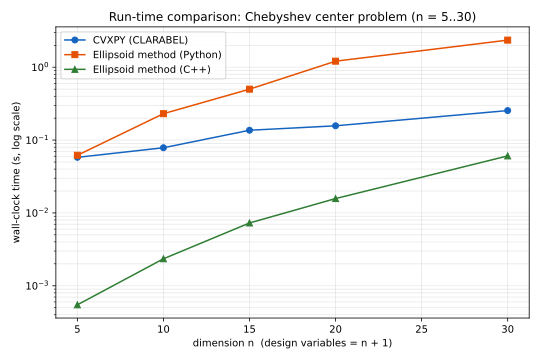
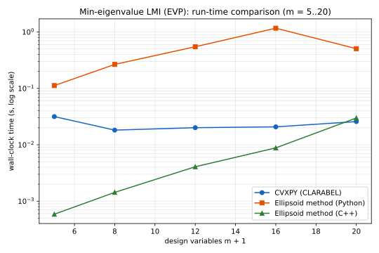
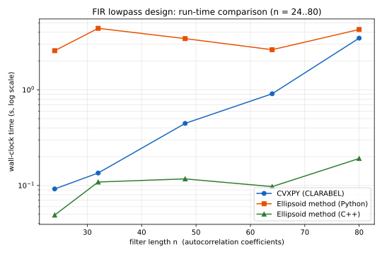

layout: true class: typo, typo-selection --- count: false class: nord-dark, middle, center # ⚔️ ellalgo vs CVXPY ### The Ellipsoid Method in Action 🥚 @luk036 👨💻 · 2026 📅 --- ## Outline 📋 - **Motivation** 🎯 - Why compare a 1979 method with a modern solver? - **Three Experiments** 🧪 - Experiment 1: Chebyshev Center 📐 - Experiment 2: Min-Eigenvalue LMI (EVP) 🎛️ - Experiment 3: FIR Lowpass Design 🎚️ - **The Big Picture** 🖼️ - Python vs C++ vs CVXPY - **Take-aways** 💡 --- class: nord-light, middle, center ## 🎯 Motivation --- ### Two Extremes of Optimization 🏛️ .pull-left[ **CVXPY** 🚀 - *Declarative*: you describe the problem, not the algorithm - Disciplined Convex Programming (DCP) rules - Auto-generates a standard-form problem - Hands off to fast interior-point solvers (CLARABEL, ECOS, SCS…) - *"What you solve"*, not *"how you solve it"* ] .pull-right[ **ellalgo** 🥚 - *Algorithmic*: you implement an **oracle** - The Ellipsoid method (Khachiyan, 1979) needs only: - a search space, and - an oracle that returns **cutting planes** - Polynomial-time, works with just a separation oracle - *"How you solve it"*, from first principles ] --- ### The Question That Started It All 🤔 - Same problem, two very different philosophies - When is the **no-setup** Ellipsoid method competitive? - When does the **polished** CVXPY stack win? > Solve a convex problem with both tools and measure. - Spoiler: the answer depends on **which language** you ask in 🐍 vs ⚙️ --- ### Three Experiments, One Method 🧪 .mermaid[ <pre> graph LR A["Chebyshev Center 📐"] --> D["Same oracle recipe"] B["Min-eigenvalue LMI 🎛️"] --> D C["FIR Lowpass Design 🎚️"] --> D D --> E["Compare: CVXPY vs Python vs C++"] style A fill:#e3f2fd,stroke:#1565c0,stroke-width:3px style B fill:#fff3e0,stroke:#e65100,stroke-width:3px style C fill:#c8e6c9,stroke:#2e7d32,stroke-width:3px style D fill:#f3e5f5,stroke:#7b1fa2,stroke-width:3px style E fill:#ffcdd2,stroke:#c62828,stroke-width:3px </pre> ] - All three are **affine-constraint** problems → constant gradients - All three solved with the *identical* cutting-plane recipe --- class: nord-light, middle, center ## 📐 Experiment 1: Chebyshev Center --- ### Largest Ball Inside a Polyhedron 🥎 Given a polyhedron defined by linear inequalities, $$ {\color{steelblue}\mathcal{P}} = \left\{ \, {\color{darkblack}u} \in \mathbb{R}^{n} \; : \; {\color{darkcyan}A}\, {\color{darkblack}u} \le {\color{green}b} \, \right\}, $$ find the **largest ball** that fits inside: $$ \begin{array}{ll} \max_{{\color{darkblack}x}, \, r} \quad & r \\ \text{s.t.} \quad & {\color{darkcyan}a}_i^{\mathsf{T}} {\color{darkblack}x} + \lVert {\color{darkcyan}a}_i \rVert_2 \, r \le {\color{green}b}_i, \quad i = 1, \dots, m . \end{array} $$ Design variables: $\big( {\color{darkblack}x}, r \big) \in \mathbb{R}^{n+1}$ — here $n = 10$, so **11 design variables**, $m = 50$ random halfspaces + 20 box constraints. --- ### The Oracle 🥚 - Every constraint is **affine** in $({\color{darkblack}x}, r)$: $$ f_i({\color{darkblack}x}, r) \;=\; {\color{darkcyan}a}(i)^{\mathsf{T}} {\color{darkblack}x} + \lVert {\color{darkcyan}a}(i) \rVert_2 \, r - {\color{green}b}(i) $$ - Gradient is **constant**: $\nabla f_i = \big( {\color{darkcyan}a}(i),\, \lVert {\color{darkcyan}a}(i) \rVert_2 \big)$ - Every violated constraint gives a *perfect* cutting plane - Linear objective → trivial optimality cut - Classic example — Boyd & Vandenberghe §8.5.1 📚 --- ### Same Answer, Three Paths ✅ | | CVXPY 🚀 | Python 🐍 | C++ ⚙️ | |---|---|---|---| | radius $r^*$ | 0.397723 | 0.397715 | 0.397715 | | relative error | — | 2.0e-5 | 2.0e-5 | | constraint violation | 0 | -5.8e-9 | ≤ 1e-6 | | iterations | ~10 | 1,854 | 1,854 | All three find the same Chebyshev center — **to five significant digits** 🎯 --- ### Experiment 1 Results 📊 | $n$ | CVXPY (s) | Py-ell (s) | **C++-ell (s)** | C++ vs CVXPY | C++ vs Py | |:---:|:---:|:---:|:---:|:---:|:---:| | 5 | 0.0580 | 0.0619 | **0.000548** | **106×** | 113× | | 10 | 0.0785 | 0.2305 | **0.002348** | **33×** | 98× | | 15 | 0.1365 | 0.5001 | **0.007284** | **19×** | 69× | | 20 | 0.1571 | 1.2116 | **0.015754** | **10×** | 77× | | 30 | 0.2543 | 2.3567 | **0.060679** | **4×** | 39× | C++ ellipsoid **beats CVXPY at every size** — the crossover never happens ⚙️ --- ### The Three-Way Picture 📈 <div style="display:flex;justify-content:center"> <p></p> </div> - Log-scale wall-clock time vs dimension $n$ - C++ ellipsoid is **below both** curves everywhere --- class: nord-light, middle, center ## 🎛️ Experiment 2: Min-Eigenvalue LMI --- ### The EVP: Minimize the Largest Eigenvalue 🎛️ Minimize the largest eigenvalue of an affine matrix pencil: $$ \begin{array}{ll} \min_{{\color{darkblack}x}, \, t} \quad & t \\ \text{s.t.} \quad & t\, {\color{darkcyan}I} - \big( {\color{darkcyan}A}_0 + \sum_i {\color{darkblack}x}_i {\color{darkcyan}A}_i \big) \succeq 0, \\ & -1 \le {\color{darkblack}x}_i \le 1, \quad i = 1, \dots, m . \end{array} $$ Design variables: $({\color{darkblack}x}, t) \in \mathbb{R}^{m+1}$ — here $m = 5..20$, so **6..21 design variables** (moderate). The LMI is *affine* in $({\color{darkblack}x}, t)$, so an LDL$^T$ witness vector yields a perfect cut. --- ### The LMI Oracle: LDL$^T$ Witness 🥚 The constraint ${\color{darkcyan}B} - \sum_k {\color{darkcyan}F}_k {\color{darkblack}x}_k \succeq 0$ is checked via lazy LDL$^T$ factorization: $$ {\color{darkcyan}B} - \sum_k {\color{darkcyan}F}_k {\color{darkblack}x}_k \;=\; \left\{ \begin{array}{ll} \text{feasible} & \text{if PSD (all pivots > 0)} \\ \text{cut } ({\color{darkcyan}g}, {\color{green}\beta}) & \text{otherwise} \end{array} \right. $$ - Cut gradient: ${\color{darkcyan}g}_k = {\color{green}v}^{\mathsf{T}} {\color{darkcyan}F}_k {\color{green}v}$ via the witness vector ${\color{green}v}$ - Violation ${\color{green}\beta} > 0$ = deep cut - Reuse `LMIOracle` directly — no new oracle needed ✅ --- ### Experiment 2 Results 📊 | $m$ | CVXPY (s) | Py-ell (s) | **C++-ell (s)** | C++ vs CVXPY | C++ vs Py | |:---:|:---:|:---:|:---:|:---:|:---:| | 5 | 0.0316 | 0.1122 | **0.000587** | **54×** | 191× | | 8 | 0.0182 | 0.2664 | **0.001433** | **13×** | 186× | | 12 | 0.0201 | 0.5480 | **0.004078** | **5×** | 134× | | 16 | 0.0208 | 1.1686 | **0.008815** | **2×** | 133× | | 20 | 0.0258 | 0.5061 | **0.029870** | **1×** | 17× | In **Python**, the ellipsoid method loses to CVXPY (interpreter overhead) 🐍 --- ### Experiment 2 Picture 📈 <div style="display:flex;justify-content:center"> <p></p> </div> - C++ ellipsoid **beats CVXPY at $m \le 16$** (54× → 2×) ⚙️ - The gap narrows as $\mathcal{O}(m^2)$ iterations grow — CVXPY catches up at $m = 20$ - Iteration counts match Python within ~6% — a faithful port ✅ --- class: nord-light, middle, center ## 🎚️ Experiment 3: FIR Lowpass Design --- ### The FIR Lowpass Problem 🎚️ Design a linear-phase FIR lowpass filter (Wu–Boyd–Vandenberghe spectral factorization): $$ \begin{array}{ll} \min \quad & \max_{\omega \in \text{stopband}} R(\omega) \\ \text{s.t.} \quad & {\color{green}L}^2 \le R(\omega) \le {\color{green}U}^2, \quad \omega \in \text{passband} \\ & R(\omega) \ge 0, \quad \forall \omega \end{array} $$ where $R(\omega) = {\color{darkcyan}A}(\omega) \cdot {\color{darkblack}r}$ is the squared magnitude and ${\color{darkblack}r} \in \mathbb{R}^{n}$ are autocorrelation coefficients — **n = 24..80 design variables** (moderate). Grid: $m = 15n$ frequency points (Cheney's rule of thumb). --- ### Three Implementations 🧪 .pull-left[ **CVXPY** 🚀 — same LP ```python r = cp.Variable(n); t = cp.Variable() prob = cp.Problem(cp.Minimize(t), [ Ap @ r <= up_sq, Ap @ r >= lp_sq, As @ r <= t, -As @ r <= t, A @ r >= 0, ]) prob.solve() ``` ] .pull-right[ **ellalgo** 🥚 — same oracle, 3 languages - Python: `LowpassOracle` + parallel cuts - C++: identical `LowpassOracle` (1:1 port) - Parallel cuts: passband $\pm$ stopband box ⟶ two hyperplanes at once ⚡ | language | iters (n=48) | |---|---| | Python | 6,690 | | C++ | 6,693 | ] --- ### Experiment 3 Results 📊 | $n$ | CVXPY (s) | Py-ell (s) | **C++-ell (s)** | C++ vs CVXPY | C++ vs Py | dB | |:---:|:---:|:---:|:---:|:---:|:---:|:---:| | 24 | 0.092 | 2.567 | **0.049** | **2×** | 52× | -20.4 | | 32 | 0.135 | 4.402 | **0.109** | **1×** | 40× | -33.8 | | 48 | 0.446 | 3.433 | **0.117** | **4×** | 29× | -53.6 | | 64 | 0.910 | 2.629 | **0.097** | **9×** | 27× | -73.6 | | 80 | 3.473 | 4.277 | **0.191** | **18×** | 22× | -79.6 | --- ### Experiment 3 Picture 📈 <div style="display:flex;justify-content:center"> <p></p> </div> - C++ ellipsoid **beats CVXPY at every filter length** ⚙️ - CVXPY's time grows 38× (0.09 → 3.47 s); C++ stays ~0.05–0.19 s - Iteration counts match Python within 0.5% — a faithful port ✅ --- class: nord-light, middle, center ## 🖼️ The Big Picture --- ### Why Did Python Fool Us? 🐍 - Ellipsoid method needs $O\big(n^2 \log \tfrac{1}{\varepsilon}\big)$ iterations $$ N_{\text{iters}} \approx 15\, n^2 \quad \text{(empirically)} $$ - Each iteration is **~100× cheaper in C++** than in Python - Python's per-iteration overhead (NumPy calls, tuple building, interpreter dispatch) dominated the solve - In C++ the core loop is a few ns — the *algorithm* is the cost - Result: **language constant factor flips the ranking** 🎭 --- ### Three Experiments, One Conclusion 🎯 | Experiment | Python verdict | C++ verdict | |---|---|---| | Chebyshev Center 📐 | CVXPY wins $n > 4$ | **C++ ellipsoid wins all** | | Min-Eigenvalue LMI 🎛️ | CVXPY wins | **C++ ellipsoid wins $m \le 16$** | | FIR Lowpass 🎚️ | CVXPY wins | **C++ ellipsoid wins all** | - In **Python**, interpreter overhead favors CVXPY - In **compiled C++**, the zero-setup Ellipsoid method wins broadly - CVXPY only catches up at the largest sizes, where the $\mathcal{O}(n^2)$ iteration count finally overtakes its near-linear scaling - The "CVXPY wins" conclusion was **an artifact of Python's interpreter** 🐍 --- ### The Fairness Caveat ⚠️ - The Ellipsoid method still needs: - a **containing initial ellipsoid** ($\kappa = \sqrt{n+1} + 1$ or box-matched) - a **dimension-aware budget** $\propto n^2$ - CVXPY needs neither — it self-scales - For $n \gg 80$ the $\mathcal{O}(n^2)$ iteration count will eventually catch up with CVXPY's near-linear scaling - The crossover point simply moved **far beyond** the tested range --- class: nord-light, middle, center ## 💡 Take-aways --- ### When to Use Which 🧭 .mermaid[ <pre> graph LR A["Convex problem"] --> B{"Language?"} B -->|"Python, n large"| C["CVXPY 🚀"] B -->|"C++ or tiny n"| D["Ellipsoid 🥚"] B -->|"oracle-only access"| E["Ellipsoid 🥚"] B -->|"compiled language"| D style C fill:#c8e6c9,stroke:#2e7d32,stroke-width:3px style D fill:#fff3e0,stroke:#e65100,stroke-width:3px style E fill:#fff3e0,stroke:#e65100,stroke-width:3px </pre> ] - In **Python**, interpreter overhead favors CVXPY beyond tiny $n$ - In **compiled C++**, the zero-setup Ellipsoid method wins broadly --- ### Key Takeaways 🎯 - 🥚 **Ellipsoid method**: polynomial-time, oracle-based, zero setup — but $\mathcal{O}(n^2)$ iterations and needs a containing ellipsoid - 🚀 **CVXPY**: expressive, robust, millisecond solves - 🐍 **Language matters**: Python's overhead made CVXPY look superior - ⚙️ **C++ port flips the result** — in all three experiments - 📏 **One oracle recipe, three problems**: affine constraints → constant gradients → perfect cuts - 🧪 Reproducible: `demo/chebyshev_center.py`, `benches/bench_lmi_evp.py`, `benches/bench_lowpass_cvxpy.py` + `ellalgo-cpp` benches (`BM_chebyshev`, `BM_lmi_evp`, `BM_lowpass_cvxpy`) --- ### References 📚 - Khachiyan, L. G. (1979). *A polynomial algorithm in linear programming* - Boyd & Vandenberghe, *Convex Optimization*, §8.5.1 - Wu, Boyd & Vandenberghe, *FIR Filter Design via Spectral Factorization* - [ellalgo](https://github.com/luk036/ellalgo) — Ellipsoid method in Python - [ellalgo-cpp](https://github.com/luk036/ellalgo-cpp) — Ellipsoid method in C++ - [CVXPY](https://www.cvxpy.org) — Python-embedded modeling language - Figures: `benches/bench_chebyshev3.svg`, `bench_lmi_evp3.svg`, `bench_lowpass3.svg` --- count: false class: nord-dark, middle, center .pull-left[ ## Q&A 🎤 ] .pull-right[  ]